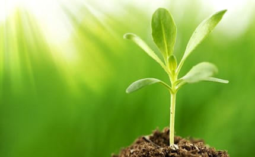

Plants are everywhere around us, but how do plants grow and what makes plants grow? There are many things plants need to grow such as water, nutrients, air, water, light, temperature, space, and time. Growing your own plants can be one of the most rewarding experiences.You may have realized that plants are living things. Yup, just like people and animals and bugs, they start out as babies and grow into adults. They reproduce. They can get diseases. They grow old and die.
How to grow Plants?
| Steps | Description |
|---|---|
| Creating the Right Environmental Conditions |
|
| Providing Water and Food |
|
| Using Tricks to Make Plants Thrive |
|
Planting can be: